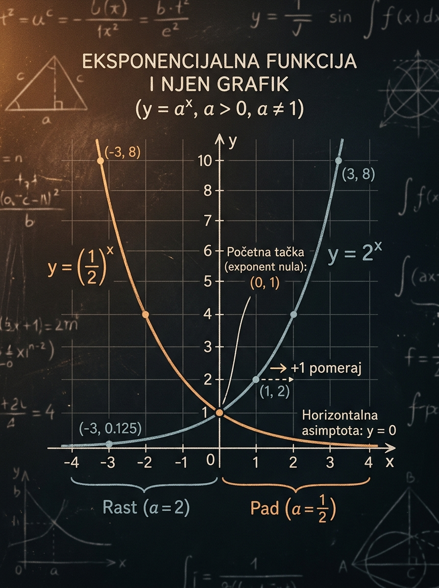

Naučićeš
Kako da iz jedne formule pročitaš rast, pad, asimptotu i ključne tačke
Nećeš crtati naslepo, već po jasnom algoritmu koji radi i za pomerene grafike.
Kada je promenljiva u eksponentu, grafik više ne liči ni na pravu ni na parabolu. Upravo zato ova lekcija traži novi mentalni model: baza određuje da li funkcija raste ili opada, a pomeraji menjaju položaj cele krive i njene asimptote. Ako ovo razumeš kako treba, sledeće lekcije o eksponencijalnim jednačinama i logaritmima postaju mnogo preglednije.
Nećeš crtati naslepo, već po jasnom algoritmu koji radi i za pomerene grafike.
Kod baze manje od 1 funkcija opada, i to je mesto na kome se na prijemnom često gube laki poeni.
Kad to vidiš odmah, pola zadatka je već organizovano pre računanja.

Eksponencijalna funkcija je prvi ozbiljan susret sa funkcijom čiji je argument u eksponentu. To znači da se promena ne odvija ravnomerno kao kod linearne funkcije, niti po paraboli kao kod kvadratne, već mnogo brže ili mnogo sporije, u zavisnosti od baze. Zbog toga je ova lekcija važna i konceptualno i ispitno.
Eksponencijalne jednačine i nejednačine nećeš rešavati sigurno ako ne razumeš kako se ponaša funkcija \(a^x\) i zašto monotono raste ili opada. Logaritamska funkcija će kasnije biti njena inverzna slika.
Na prijemnom se često traži da sa malo računa zaključiš znak, monotonost, broj preseka sa pravom ili položaj asimptote. To su zadaci koji nagrađuju razumevanje, a kažnjavaju mehaničko računanje.
Dobar učenik ovde ne pamti samo formulu. On vidi sliku: jedna kriva uvek ostaje iznad asimptote, prolazi kroz karakterističnu tačku i menja smer rasta u zavisnosti od baze.
Eksponencijalne jednačine i nejednačine, a zatim logaritamske funkcije i logaritamske jednačine. Ako ovde razumeš graf, kasniji algebrajski postupci imaju mnogo više smisla.
Eksponencijalna funkcija je funkcija oblika \(f(x)=a^x\), gde je baza \(a\) pozitivan broj različit od \(1\). Ključna novina je to što je promenljiva \(x\) u eksponentu, a ne ispred baze.
U školskim zadacima baza je najčešće \(2\), \(3\), \(\frac12\), \(\frac13\), ali može biti bilo koji pozitivan realan broj osim jedinice.
Funkcija je definisana za svaki realan broj \(x\), ali njene vrednosti su uvek strogo pozitivne. Zato grafik nikada ne seče \(x\)-osu.
Zato što za svaku dozvoljenu bazu važi \(a^0=1\). Čim u eksponent staviš \(x=0\), dobijaš vrednost \(1\).
Sve se menja u zavisnosti od toga da li je baza veća od \(1\) ili između \(0\) i \(1\). To nije sitnica, nego glavno pravilo za čitanje eksponencijalnog grafa i rešavanje zadataka.
Ako je baza veća od \(1\), svako povećanje eksponenta daje veću vrednost. Zato grafik ide naviše kada se krećeš udesno. Primeri su \(2^x\), \(3^x\), \(10^x\).
Ako je baza razlomak između \(0\) i \(1\), svako povećanje eksponenta daje manju vrednost. Zato grafik opada kada se krećeš udesno. Primeri su \(\left(\frac12\right)^x\) i \(\left(\frac13\right)^x\).
Kada pomeriš \(x\) za \(1\), vrednost funkcije se množi bazom \(a\). Ako množiš brojem većim od \(1\), vrednosti rastu. Ako množiš brojem između \(0\) i \(1\), vrednosti opadaju.
Za rastuću funkciju je veći eksponent dovoljan da zaključiš veću vrednost. Za opadajuću funkciju važi obrnuto. Ovo je veoma korisno kod poređenja izraza na prijemnom.
Opada, jer je baza \(\frac14\) između \(0\) i \(1\). To je najvažniji signal koji moraš odmah da vidiš.
Na prijemnom se retko ostaje samo na čistoj funkciji \(a^x\). Mnogo češće dobijaš pomeren oblik. Zato moraš da umeš da pročitaš funkciju \(g(x)=a^{x-p}+q\) bez panike i bez precrtavanja od nule.
Ako je u eksponentu \(x-p\), osnovni grafik se pomera udesno za \(p\). Ako je \(x+p\), pomera se ulevo za \(p\). Tačka u kojoj je eksponent nula postaje \(x=p\), pa tada dobijaš vrednost \(1\).
Sabiranje broja \(q\) pomera grafik naviše za \(q\) ako je \(q>0\), odnosno naniže ako je \(q<0\). Zajedno sa grafikom pomera se i horizontalna asimptota.
Pošto je \(a^{x-p}\) uvek pozitivno, funkcija \(a^{x-p}+q\) ostaje strogo iznad prave \(y=q\). Grafik može da joj se približava beskonačno, ali je ne dodiruje.
Horizontalni i vertikalni pomeraj ne kvare domen: i dalje je \(\mathbb{R}\). Ali se skup vrednosti pomera naviše ili naniže zajedno sa asimptotom.
Kada je eksponent jednak nuli, dobijaš vrednost \(1\). Zato za funkciju \(g(x)=a^{x-p}+q\) odmah dobijaš tačku
To je često najbolja polazna tačka za crtanje.
Ako se pojavi oblik \(c\cdot a^{x-p}+q\), onda broj \(c\) menja vertikalno rastezanje, a ako je \(c<0\), grafik se preslikava u odnosu na asimptotu. Tada je skup vrednosti \((-\infty,q)\), a ne \((q,\infty)\).
Asimptota je \(y=-4\). Osnovna asimptota \(y=0\) pomerena je naniže za \(4\).
Crtanje eksponencijalne funkcije nije takmičenje u broju tačaka. Dovoljno je nekoliko dobro izabranih informacija: baza, asimptota, smer rasta i jedna ili dve karakteristične tačke.
Eksponencijalni grafik ne seče horizontalnu asimptotu. Ako si na skici presekao pravu \(y=q\), skica je pogrešna. Druga tipična greška je da se zaboravi da je \(a^{x-p}\) uvek pozitivno.
Ovo je rastuća eksponencijalna funkcija, jer je baza \(2>1\). Horizontalna asimptota je \(y=-3\). Kada je eksponent nula, to jest za \(x=1\), dobijaš tačku \(g(1)=2^0-3=1-3=-2\), pa je jedna sigurna tačka \((1,-2)\). Za \(x=2\) dobijaš \(g(2)=2^1-3=-1\), a za \(x=3\) dobijaš \(g(3)=2^2-3=1\). Dovoljno da vidiš rastuću krivu koja dolazi blizu prave \(y=-3\) s leve strane, a zatim se diže naviše.
Eksponent je nula kada je \(x+2=0\), dakle za \(x=-2\). Tada je \(h(-2)=1+1=2\), pa je najbrža karakteristična tačka \((-2,2)\).
U ovoj laboratoriji menjaš funkciju \(y=a^{x-p}+q\). Posmatraj kako se istovremeno menja smer rasta ili pada, položaj asimptote, karakteristične tačke i vrednost funkcije u izabranoj tački.
Ne pomeraj kontrole nasumice. Za svaku novu postavku prvo pokušaj da sam predvidiš: da li funkcija raste ili opada, gde je asimptota i koja je tačka sa eksponentom \(0\).
Ovo je zapis koji trenutno crtaš.
Grafik joj se približava, ali je ne seče.
Smer zavisi samo od baze, ne od pomeraja.
Za ovaj model grafik je uvek iznad svoje asimptote.
Najvažnija je tačka u kojoj je eksponent jednak nuli.
Koristi je da proveriš da li umeš da čitaš funkciju bez kalkulatora.
U primerima je najvažnije da pratiš redosled razmišljanja. Cilj nije samo tačan odgovor, nego i siguran obrazac koji možeš da preneseš na prijemni zadatak.
Odredi domen, skup vrednosti, monotonost, asimptotu i nekoliko tačaka potrebnih za skicu.
Poenta ovog primera je da vidiš koliko mnogo zaključaka dobijaš bez ikakve teške računice.
Data je funkcija \(g(x)=\left(\frac13\right)^x\). Odredi monotonost i reši nejednačinu \(g(x)>1\).
Ovo je lep primer kako monotono ponašanje rešava zadatak brže od grubog računanja.
Odredi asimptotu, jednu ključnu tačku, presek sa \(y\)-osom i presek sa \(x\)-osom.
Na prijemnom se često traži upravo ovo: dobra skica i zaključak o broju preseka, čak i kada presek nije "lep broj".
Funkcija je oblika \(f(x)=a^x+2\) i prolazi kroz tačku \((1,5)\). Odredi \(a\) i osnovne osobine grafa.
Ovaj tip zadatka proverava da li umeš da povežeš jednačinu tačke sa oblikom eksponencijalne funkcije.
Posmatraj funkciju \(k(x)=2^{x-2}+1\). Da li njen grafik seče \(x\)-osu?
Ovo je važan prijemni refleks: pre nego što kreneš da rešavaš jednačinu, proveri da li je presek uopšte moguć.
Uporedi funkcije \(u(x)=2^{x-2}\) i \(v(x)=2^x-2\). Objasni zašto nisu isti pomeraj.
Ovo je jedna od najčešćih grafičkih zamki u celoj oblasti eksponencijalnih funkcija.
Ovo je deo koji vredi ponavljati pred kontrolni ili prijemni. Svaka kartica nosi jedan osnovni refleks.
Promenljiva je u eksponentu, a baza mora biti pozitivna i različita od \(1\).
Eksponencijalna funkcija je svuda definisana i uvek pozitivna.
Zato osnovni grafik uvek prolazi kroz \((0,1)\).
Smer rasta određuje samo baza.
Grafik je pomeren za \(p\) horizontalno i za \(q\) vertikalno.
Kod funkcije \(a^{x-p}+q\) horizontalna asimptota prati vertikalni pomeraj.
Ovde su greške koje se stalno ponavljaju. Prođi kroz njih pažljivo, jer su upravo one tipične prijemne zamke.
Učenik vidi pozitivan broj i automatski kaže "rastuća". To nije tačno. Ako je baza između \(0\) i \(1\), funkcija opada.
Prvi zapis menja grafik horizontalno, drugi vertikalno. Ako to zameniš, dobijaš potpuno pogrešnu asimptotu i pogrešnu skicu.
Eksponencijalni grafik može beskonačno da se približava asimptoti, ali je ne seče. Ako je presekao, crtež nije dobar.
Nije tačno. Funkcija \(a^{x-p}+q\) je i dalje definisana za svaki realan broj \(x\).
Ako je funkcija stalno iznad svoje asimptote i asimptota je iznad ili na \(x\)-osi, presek sa \(x\)-osom često ni ne postoji.
Mnogi učenici odmah kreću u detaljne račune, a zaborave da baza, asimptota i jedna karakteristična tačka već daju gotovo celu sliku.
Na prijemnom se ova tema retko pojavljuje kao "nacrtaj grafik i ništa više". Mnogo češće se traži tumačenje grafa, broj rešenja jednačine, poređenje vrednosti ili prepoznavanje ispravnog crteža.
Čim vidiš funkciju, odmah odluči: \(a>1\) ili \(0<a<1\). To rešava pitanje rasta i pada.
Ako imaš oblik \(a^{x-p}+q\), prvo zapiši \(y=q\). To je sidro celog grafa.
To je najbrži način da dobiješ pouzdanu tačku bez komplikovanog računanja.
Pre računanja se pitaj da li je uopšte moguć. Ako je funkcija uvek iznad nule, nema svrhe rešavati jednačinu.
Kod istih baza često ne moraš ništa da računaš. Dovoljno je da znaš kako se funkcija ponaša.
Dobar rezultat dolazi kada isti zadatak vidiš i kao formulu i kao sliku. To ubrzava proveru grešaka.
Pokušaj da zadatke uradiš samostalno, pa tek onda otvori rešenje. Najviše koristi imaš ako prvo sam formiraš skicu i zaključke.
Za funkciju \(f(x)=3^x\) odredi domen, skup vrednosti, monotonost i horizontalnu asimptotu.
Pošto je baza \(3>1\), funkcija je rastuća. Domen je \(\mathbb{R}\), skup vrednosti \((0,\infty)\), a horizontalna asimptota \(y=0\).
Za funkciju \(g(x)=\left(\frac12\right)^{x+1}-2\) odredi asimptotu i presek sa \(x\)-osom.
Asimptota je \(y=-2\). Presek sa \(x\)-osom dobijaš iz \(\left(\frac12\right)^{x+1}-2=0\), odnosno \(\left(\frac12\right)^{x+1}=2=\left(\frac12\right)^{-1}\). Zato je \(x+1=-1\), pa je \(x=-2\).
Funkcija je oblika \(h(x)=a^x\) i važi \(h(2)=9\). Odredi bazu \(a\).
Iz uslova sledi \(a^2=9\). Kako baza eksponencijalne funkcije mora biti pozitivna, dobijaš \(a=3\), a ne \(-3\).
Da li grafik funkcije \(k(x)=2^{x-2}+1\) seče \(x\)-osu?
Ne seče. Pošto je \(2^{x-2}>0\) za svaki \(x\), sledi \(k(x)>1\). Dakle, funkcija je uvek pozitivna.
Reši bez kalkulatora nejednačinu \(\left(\frac14\right)^{x+2}<1\).
Za bazu između \(0\) i \(1\) vrednost funkcije je jednaka \(1\) kada je eksponent \(0\), a manja od \(1\) kada je eksponent pozitivan. Zato treba da važi \(x+2>0\), pa je rešenje \(x>-2\).
Za funkciju \(m(x)=3^{x-1}+4\) napiši jednu sigurnu tačku i horizontalnu asimptotu.
Eksponent je nula kada je \(x=1\). Tada je \(m(1)=1+4=5\), pa je sigurna tačka \((1,5)\). Horizontalna asimptota je \(y=4\).
Eksponencijalni grafik se ne crta iz mnogo slučajnih tačaka. Prvo gledaš bazu, zatim asimptotu, pa tačku u kojoj je eksponent jednak nuli. To je najbrži i najpouzdaniji put do dobre skice i dobrog rešenja.
Na kraju ove lekcije cilj je da eksponencijalnu funkciju vidiš kao celinu, a ne kao izolovanu formulu.